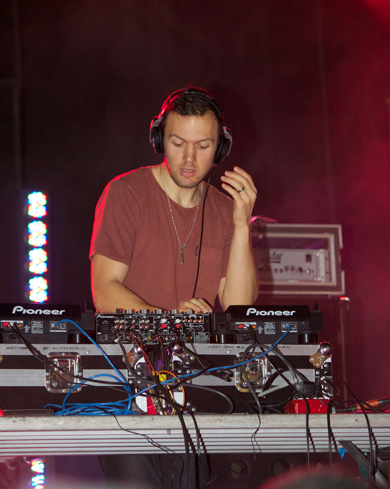

Chris Lake sold out his first LA State Historic Park date so fast he added a second. Presented by Goldenvoice and Framework, this is house music as a stadium act, outdoors, downtown skyline behind the stage. Here is everything you need so you can stop checking your phone and just dance.
How the night tends to build, so you know who you’re hearing:
(Set times aren’t posted in advance, so that’s the shape of the evening, not a clock. Trust your feet.)
He plays the long game, literally. Daley grew up on the Athersley South estate near Barnsley and started spinning marathon Sunday sets as a teenager. By 2006 he had a residency at Cream in Ibiza. The Hot Since 82 name arrived in 2011 with “Let It Ride,” which shot to number three on Beatport’s deep house chart out of nowhere.
His genius is patience. Where others drop the hammer, he builds a groove and lets it breathe for ten minutes until the whole field is moving as one body. That’s the Shambhala feeling you and Drake chase every year, and it’s exactly what he does in daylight.
This isn’t a stranger on the bill, it’s the banner the whole night flies under. Chris Lake throws his parties as worlds with names: Club Glow, Club Darc, and this year’s touring concept, Clüb de Combat. The name is the warning label. It’s his harder, faster, warehouse-leaning side, the sound tied to his thumping 2026 single “Make You Fight” with ATRIP.
So when the energy in the park tips from groove to genuine fight-or-flight adrenaline, that’s Combat. It’s the part of the night that earns the recovery day after.

Twenty years deep, and he built it his way. Chris broke through in 2006 with “Changes,” moved to LA in 2010, and in 2016 started Black Book Records so he could own his own sound. Then came the tracks that became the canon: “Operator” in 2017, “Turn Off The Lights” in 2018, and as one half of Anti Up with Chris Lorenzo, a Coachella closing set.
Black Book’s live shows have sold more than 300,000 tickets across North America, the Brooklyn Mirage, Space Miami, Denver’s Mission Ballroom. Tonight, in a downtown LA park for twenty thousand people, is the biggest standalone show he has ever headlined in this city. You’re not at a concert. You’re at a milestone.
You and Drake found each other in a Las Vegas crowd and never let go. Tonight the crowd is twenty thousand strong, the man you married is one year older, and the sky over downtown is yours.
You two are the ones who taught the rest of us that the dancefloor is a sacred place, never-miss, hard-commit, every single year. So this is just a little map so you never have to wonder who’s playing. Now put the phone away. Hot Since 82 will take you up slow, Combat will take you somewhere louder, and when Chris Lake brings it home under the skyline, hold Drake and don’t let the moment pass.
Happy birthday to our Drake. Dance like it’s Shambhala.